5 PlantUML
5.1 Instalación
iasi.quarto se distribuye como un paquete de R.
Su instalación añade al entorno dos operaciones públicas:
validate()
build()La primera reconoce una publicación IASI Quarto. La segunda ejecuta su ciclo completo de construcción.
El paquete no sustituye a Quarto ni instala por sí mismo sus herramientas externas. Trabaja sobre un entorno en el que R y Quarto ya están disponibles.
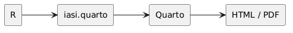
La instalación se divide en tres pasos:
comprobar los requisitos
instalar iasi.quarto
verificar el entornoEn primer lugar, se comprueba que R y Quarto puedan ejecutarse correctamente.
Después se instala el paquete desde su repositorio.
Por último, se realiza una comprobación mínima para confirmar que iasi.quarto puede cargarse y reconocer una publicación.
Este capítulo no pretende explicar cómo instalar R o Quarto en cada sistema operativo. Su objetivo es dejar preparado el entorno específico que necesita iasi.quarto.
Al finalizar, debe ser posible ejecutar:
library(iasi.quarto)
validate()y obtener un plan cuando el directorio actual contiene una publicación o un multiproyecto IASI Quarto.
La instalación prepara la herramienta. La estructura y la configuración de la publicación siguen perteneciendo al proyecto.
5.1.1 ¿Por qué PlantUML?
Quarto admite distintas formas de incorporar diagramas en una publicación.
Mermaid es una alternativa especialmente cómoda para diagramas sencillos. Puede escribirse directamente dentro del documento y encaja bien cuando el objetivo principal es representar rápidamente un flujo, una secuencia o una relación entre elementos.
PlantUML introduce una decisión diferente.
En esta plataforma, el diagrama no se trata únicamente como una ilustración embebida en Markdown. Se trata como una fuente que atraviesa un compilador especializado antes de incorporarse al documento final.
fuente PlantUML
-> estilos compartidos
-> extensión Lua
-> servidor PlantUML
-> imagen
-> caché
-> HTML o PDFLa elección no nace de una oposición entre herramientas.
Mermaid y PlantUML resuelven problemas parcialmente coincidentes, pero encajan de forma distinta en una arquitectura documental.
5.1.1.1 Mermaid como opción válida
Mermaid resulta apropiado cuando se busca:
escribir diagramas con poca infraestructura
mantener todo dentro del documento
crear representaciones rápidas
aprovechar una integración directa con Quarto
evitar un servidor externoPara muchos proyectos, estas propiedades son suficientes.
Un diagrama sencillo puede escribirse cerca del texto al que pertenece y renderizarse como parte natural del documento.
La ventaja principal es la inmediatez.
fuente Mermaid
-> Quarto
-> representación finalEste camino reduce componentes y simplifica la puesta en marcha.
5.1.1.2 Lo que necesita la plataforma
La plataforma persigue algo más amplio que insertar diagramas ocasionales.
Necesita que los diagramas puedan formar parte de una infraestructura común:
estilos reutilizables
servidor controlado
salida gráfica predecible
caché independiente
integración con HTML y PDF
arquitectura extensibleTambién necesita separar claramente:
la fuente del diagrama
la configuración del compilador
el servicio de renderizado
la imagen generada
la publicación finalPlantUML encaja mejor con esa separación.
5.1.1.3 Un lenguaje orientado a documentación técnica
PlantUML ofrece una familia amplia de diagramas útiles para documentación de sistemas.
Entre otros, permite representar:
secuencias
componentes
despliegues
clases
casos de uso
estados
actividades
objetos
arquitecturasLa importancia no está únicamente en la cantidad de tipos disponibles.
La misma herramienta puede acompañar diferentes niveles de documentación:
visión general del sistema
interacción entre servicios
estructura lógica
despliegue físico
flujo de una operación
modelo de dominioEsto reduce la necesidad de introducir una tecnología diferente para cada clase de diagrama.
5.1.2 Estilos compartidos
Una de las razones principales de la elección es la posibilidad de centralizar la presentación mediante archivos .puml.
Por ejemplo:
resources/plantuml/iasi.pumlEse archivo puede contener reglas comunes para toda la publicación:
colores
tipografía
bordes
espaciado
apariencia de componentes
convenciones visualesEl documento describe el significado del diagrama.
El recurso compartido define su apariencia.
documento
-> estructura y relaciones
iasi.puml
-> lenguaje visual comúnEsta separación evita copiar configuraciones visuales dentro de cada bloque.
También permite modificar la identidad gráfica de numerosos diagramas desde un único lugar.
5.1.3 Servidor independiente
PlantUML puede ejecutarse mediante un servidor separado del proceso de Quarto.
La extensión envía la fuente preparada y recibe una imagen.
extensión
-> petición HTTP
-> servidor PlantUML
-> imagenEsta separación aporta varias posibilidades:
servidor local para una persona
servidor compartido para un equipo
contenedor dedicado
servicio interno dentro de una redEl motor de diagramación no queda acoplado al navegador ni al formato final del documento.
Puede evolucionar, actualizarse o desplegarse de forma independiente.
5.1.4 Una imagen común para HTML y PDF
La configuración recomendada genera PNG.
PlantUML -> PNG -> HTML
PlantUML -> PNG -> PDFQuarto recibe el mismo tipo de recurso para ambos formatos.
Esto evita depender de una representación distinta según el destino y reduce conversiones adicionales durante la construcción del PDF.
La decisión no significa que PNG sea siempre superior a SVG.
Significa que, para este pipeline concreto, una salida común y predecible simplifica el comportamiento general.
5.1.5 Caché antes del renderizado
La extensión puede calcular una identidad para cada diagrama a partir de:
fuente preparada
servidor
formato
versión de la extensiónCuando esa identidad ya existe en la caché, no es necesario volver a solicitar la imagen al servidor.
diagrama sin cambios
-> reutilizar imagen
diagrama modificado
-> compilar de nuevoLa caché pertenece a la infraestructura de la extensión, no al documento final.
Esta posición dentro del pipeline permite reutilizar diagramas antes de que Quarto procese HTML o PDF.
5.1.6 Integración con la arquitectura de extensiones
PlantUML es también el primer ejemplo completo del framework de extensiones de la plataforma.
La integración separa:
núcleo común
configuración
caché
sistema de archivos
mediabag
compilador específicoPlantUML aporta el compilador concreto.
El núcleo aporta el ciclo general.
bloque de código
-> configuración
-> preparación
-> identidad
-> caché
-> compilación
-> recurso para PandocEsta arquitectura permite que futuras extensiones sigan el mismo modelo sin copiar toda la infraestructura.
PlantUML no es únicamente una herramienta de diagramación dentro del proyecto.
Es el primer ciudadano de una familia de compiladores documentales.
5.1.7 Comparación resumida
| Aspecto | Mermaid | PlantUML en esta plataforma |
|---|---|---|
| Puesta en marcha | Muy directa | Requiere extensión y servidor |
| Infraestructura | Mínima | Explícita y configurable |
| Fuente en el documento | Sí | Sí |
| Estilos compartidos | Posibles, pero no son el centro del diseño adoptado | Archivo .puml común |
| Servidor propio | No es necesario | Recomendado |
| Caché de la extensión | No forma parte de este diseño | Integrada antes de Quarto |
| Salida común HTML/PDF | Depende del procesamiento del documento | PNG generado previamente |
| Encaje con el framework Lua | No es la integración elegida | Compilador especializado |
| Uso recomendado | Diagramas rápidos y ligeros | Infraestructura documental técnica |
La tabla no pretende establecer un vencedor universal.
Describe la razón por la que esta plataforma adopta PlantUML como opción principal.
5.1.8 Criterio de elección
La decisión puede resumirse así:
si el objetivo es dibujar rápidamente dentro del documento
Mermaid puede ser suficiente
si el objetivo es integrar los diagramas en una infraestructura común
PlantUML encaja mejor con esta plataformaLa elección se apoya en cuatro necesidades:
control
reutilización
reproducibilidad
extensibilidadControl sobre el servicio y el formato generado.
Reutilización de estilos y convenciones visuales.
Reproducibilidad de la construcción mediante fuente, caché y compilador.
Extensibilidad mediante una arquitectura que puede incorporar otros motores.
No elegimos PlantUML porque Mermaid no sirva. Lo elegimos porque aquí el diagrama es una pieza del pipeline de ingeniería documental.
5.2 Servidor PlantUML
La extensión necesita un servidor PlantUML accesible mediante HTTP.
El servidor recibe la fuente preparada por la extensión y devuelve la imagen del diagrama.
extensión Lua
-> petición HTTP
-> servidor PlantUML
-> imagen PNGEl servidor no tiene que ejecutarse dentro del proyecto Quarto ni dentro del proceso de R.
Puede estar:
en el mismo equipo
en otra máquina de la red
en una infraestructura compartida
en un servicio públicoLa elección depende del entorno, pero esta guía recomienda utilizar un servidor controlado por el usuario o por el equipo.
5.3 Alternativas
5.3.1 Servidor público
Un servidor público permite comenzar sin instalar infraestructura propia.
ventajas
puesta en marcha inmediata
ninguna administración local
inconvenientes
dependencia de Internet
disponibilidad fuera del control del proyecto
envío de la fuente del diagrama a un terceroPuede resultar útil para una prueba rápida.
No es la opción recomendada para documentación interna, diagramas sensibles o construcciones que deban ser reproducibles dentro de un entorno controlado.
5.3.2 Servidor local
Un servidor local se ejecuta en el mismo equipo desde el que se construye la publicación.
publicación
-> http://localhost:1025
-> PlantUMLSus principales ventajas son:
no depende de un servicio público
mantiene la fuente dentro del equipo
puede funcionar sin acceso a Internet
es sencillo de iniciar y detenerEs la opción recomendada para desarrollo individual.
5.3.3 Servidor compartido
Un equipo puede mantener una única instancia accesible dentro de su red.
equipo A ─┐
equipo B ─┼─> servidor PlantUML interno
CI/CD ──┘Esto permite compartir:
la misma versión del motor
una dirección común
una política de actualización
un servicio disponible para integración continuaEs la opción recomendada cuando varias personas o procesos construyen las mismas publicaciones.
5.4 Instalación recomendada con Docker
La instalación de referencia utiliza la imagen oficial de PlantUML Server y publica su puerto interno 8080 como puerto 1025 del equipo anfitrión.
docker run -d \
--name plantuml-server \
--restart unless-stopped \
-p 1025:8080 \
plantuml/plantuml-server:jettyEn PowerShell puede escribirse en una sola línea:
docker run -d --name plantuml-server --restart unless-stopped -p 1025:8080 plantuml/plantuml-server:jettyLa correspondencia de puertos es:
equipo anfitrión : 1025
contenedor : 8080La extensión utilizará:
http://localhost:1025El puerto 1025 es una convención de esta instalación, no una exigencia de PlantUML ni de iasi.quarto.
Puede sustituirse por otro puerto libre.
5.5 Instalación con Docker Compose
La misma instalación puede declararse mediante compose.yml:
services:
plantuml:
image: plantuml/plantuml-server:jetty
container_name: plantuml-server
restart: unless-stopped
ports:
- "1025:8080"Para iniciarla:
docker compose up -dPara comprobar su estado:
docker compose psPara detenerla:
docker compose downLa declaración Compose resulta especialmente útil cuando el servidor forma parte de un entorno de desarrollo reproducible.
5.6 Comprobar el servidor
Después de iniciar el contenedor, puede abrirse en un navegador:
http://localhost:1025También puede comprobarse desde una terminal:
curl http://localhost:1025La respuesta debe proceder del servidor PlantUML.
El contenedor puede inspeccionarse con:
docker ps --filter name=plantuml-serverY sus mensajes con:
docker logs plantuml-server5.7 Utilizarlo desde otra máquina
Cuando Quarto se ejecuta en otro equipo, localhost ya no representa la máquina que aloja PlantUML.
Debe utilizarse su nombre o dirección de red:
http://<host>:1025Por ejemplo:
filter-options:
plantuml:
server: http://plantuml.local:1025La máquina cliente debe poder resolver el nombre y acceder al puerto publicado.
La comprobación debe realizarse desde el mismo entorno que ejecutará Quarto:
curl http://plantuml.local:1025Que el servidor funcione en su propia máquina no garantiza que sea accesible desde otro equipo, una máquina virtual o un contenedor.
5.8 Configuración local recomendada
Para una publicación construida en el mismo equipo:
filter-options:
plantuml:
enabled: true
server: http://localhost:1025
format: png
cache: true
styles:
- resources/plantuml/iasi.pumlEsta configuración combina:
servidor local controlado
salida PNG
caché activada
estilo compartidoEs el punto de partida recomendado en esta guía.
5.9 Configuración para un equipo
Cuando el servidor es compartido, solo cambia su dirección:
filter-options:
plantuml:
enabled: true
server: http://plantuml.local:1025
format: png
cache: true
styles:
- resources/plantuml/iasi.pumlLa publicación no necesita conocer cómo se ejecuta internamente el servidor.
Solo necesita una URL compatible y accesible.
Esto permite cambiar su despliegue sin modificar los bloques PlantUML de los documentos.
5.10 Actualizar el servidor
Cuando se utiliza la etiqueta jetty, Docker puede obtener una versión más reciente de la imagen:
docker pull plantuml/plantuml-server:jettyDespués debe recrearse el contenedor.
Con Docker Compose:
docker compose pull
docker compose up -dPara construcciones que necesiten reproducibilidad estricta, el equipo debe fijar una etiqueta concreta o un digest de imagen en lugar de depender de una etiqueta móvil.
La actualización del servidor puede cambiar el resultado gráfico de un diagrama aunque su fuente no haya cambiado.
Por eso debe tratarse como una actualización de infraestructura y comprobarse antes de adoptarla en una publicación estable.
5.11 Seguridad y privacidad
La fuente del diagrama se envía al servidor configurado.
Por tanto:
un servidor público recibe el contenido del diagrama
un servidor local lo mantiene en el equipo
un servidor interno lo mantiene dentro de la red controladaLos diagramas pueden contener nombres de sistemas, relaciones, componentes o flujos internos.
La dirección del servidor no debe elegirse únicamente por comodidad.
Tampoco se recomienda publicar directamente en Internet una instancia propia sin revisar su exposición, configuración y política de seguridad.
Para uso individual, enlazarla únicamente al entorno necesario reduce la superficie accesible.
Para uso compartido, el servidor debe incorporarse a las medidas normales de red, actualización y control de acceso del equipo.
5.12 Disponibilidad y caché
El servidor es necesario cuando la extensión debe compilar un diagrama nuevo.
diagrama nuevo o modificado
-> necesita servidor
diagrama presente en caché
-> puede reutilizar la imagenLa caché mejora el rendimiento y reduce la dependencia durante construcciones repetidas, pero no debe confundirse con una garantía de disponibilidad permanente.
Una construcción limpia necesita poder acceder al servidor para regenerar todos los diagramas.
5.13 La instalación de referencia
La recomendación de esta guía puede resumirse así:
PlantUML Server oficial
ejecutado en Docker
puerto del anfitrión 1025
acceso local o mediante red interna
salida PNG
caché activada
estilos compartidosNo es la única instalación posible.
Es una configuración pequeña, comprensible y suficiente para desarrollar publicaciones, compartir el servicio dentro de un equipo y trasladarlo posteriormente a una infraestructura más estable.
El contrato de la extensión es una URL PlantUML accesible. Docker y el puerto
1025son la implementación de referencia.
5.14 Configurar la extensión
La extensión PlantUML se incorpora a la publicación desde la configuración de Quarto.
La configuración recomendada se declara en _quarto.yml:
filters:
- extensions/plantuml/plantuml.lua
filter-options:
plantuml:
enabled: true
server: http://localhost:1025
format: png
cache: true
styles:
- resources/plantuml/iasi.pumlEsta declaración tiene dos partes:
filters
carga el filtro Lua
filter-options
configura su comportamientoEl filtro debe cargarse antes de que sus opciones puedan aplicarse.
5.15 Ruta del filtro
La entrada:
filters:
- extensions/plantuml/plantuml.luaindica la ubicación del filtro respecto a la raíz de la publicación.
La estructura esperada puede ser:
publication/
├── _quarto.yml
├── extensions/
│ ├── core/
│ └── plantuml/
│ ├── plantuml.lua
│ ├── compiler.lua
│ └── defaults.lua
└── resources/
└── plantuml/
└── iasi.pumlLa extensión PlantUML utiliza módulos comunes situados en:
extensions/core/Por tanto, no debe copiarse únicamente plantuml.lua.
Debe conservarse la estructura completa de la extensión y de su núcleo compartido.
5.16 enabled
La propiedad:
enabled: trueactiva el procesamiento de bloques PlantUML.
Cuando su valor es false, la extensión no debe compilar los bloques.
filter-options:
plantuml:
enabled: falseEsta opción permite conservar la configuración y desactivar temporalmente la integración sin retirar el filtro de _quarto.yml.
La configuración habitual es:
enabled: true5.17 server
La propiedad server contiene la URL base del servidor PlantUML.
server: http://localhost:1025No debe incluirse el segmento de formato:
/png
/svgLa extensión lo añade al construir la petición.
La URL debe señalar únicamente la raíz del servicio:
correcto
http://localhost:1025
incorrecto
http://localhost:1025/pngPara un servidor compartido:
server: http://plantuml.local:1025La dirección debe ser accesible desde el proceso que ejecuta Quarto.
Esto es especialmente importante cuando la construcción ocurre dentro de:
una máquina virtual
un contenedor
un agente de integración continua
otro equipo de la redEn esos entornos, localhost representa el propio entorno de ejecución, no necesariamente la máquina anfitriona.
5.18 format
La configuración recomendada utiliza:
format: pngEl flujo resultante es:
PlantUML
-> PNG
-> mediabag de Pandoc
-> HTML o PDFLa salida PNG evita que la construcción PDF dependa de una conversión posterior desde SVG.
Aunque la arquitectura conserva la validación de formatos admitidos por el compilador, la implementación actual de la plataforma normaliza la salida efectiva a PNG.
Por tanto, la configuración de usuario debe expresar también:
format: pngAsí, la configuración declarada coincide con el comportamiento real del pipeline.
5.19 cache
La propiedad:
cache: trueactiva la reutilización de diagramas ya compilados.
Cuando la caché está activa:
misma fuente preparada
misma configuración relevante
misma versión de la extensión
-> misma entrada de cachéEl servidor solo vuelve a utilizarse cuando cambia la identidad del diagrama o cuando la entrada almacenada ya no está disponible.
Para desactivar temporalmente la caché:
cache: falseEsto puede resultar útil durante el diagnóstico de un servidor o de una modificación del compilador.
No es la configuración recomendada para el trabajo habitual.
5.20 styles
La propiedad styles declara los archivos PlantUML que deben incorporarse a cada diagrama.
styles:
- resources/plantuml/iasi.pumlPuede contener más de un archivo:
styles:
- resources/plantuml/base.puml
- resources/plantuml/architecture.pumlLos archivos se procesan en el orden declarado.
base.puml
-> architecture.puml
-> fuente del diagramaLa extensión lee esos recursos y los inserta después de la declaración @startuml.
Una fuente como:
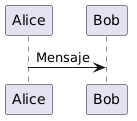
se prepara conceptualmente como:
El archivo indicado debe existir y ser legible durante la construcción.
La ruta se interpreta dentro del contexto de la publicación, por lo que conviene mantener los estilos bajo una ubicación estable:
resources/plantuml/5.21 Configuración mínima
La configuración mínima necesita el filtro y un servidor:
filters:
- extensions/plantuml/plantuml.lua
filter-options:
plantuml:
enabled: true
server: http://localhost:1025
format: pngSin estilos:
el diagrama conserva la presentación predeterminada de PlantUMLSin caché explícita:
se aplica el valor definido por la extensiónPara que el proyecto sea legible y reproducible, es preferible declarar las opciones importantes de forma explícita.
5.22 Configuración recomendada
La configuración completa recomendada es:
filters:
- extensions/plantuml/plantuml.lua
filter-options:
plantuml:
enabled: true
server: http://localhost:1025
format: png
cache: true
styles:
- resources/plantuml/iasi.pumlEsta combinación expresa todas las decisiones relevantes:
la extensión está activa
el servidor es local
la salida es PNG
la caché está habilitada
la publicación comparte un estilo5.23 Configuración por entorno
La URL del servidor puede variar entre equipos.
Por ejemplo:
desarrollo local
http://localhost:1025
red interna
http://plantuml.local:1025
integración continua
http://plantuml:8080No conviene fijar en una guía reutilizable el nombre concreto de una máquina personal.
La configuración debe describir el servicio desde el punto de vista del entorno que ejecuta la publicación.
Cuando varios perfiles de Quarto necesitan direcciones diferentes, la opción puede colocarse en la configuración correspondiente al entorno.
La configuración común debe mantenerse en _quarto.yml, y únicamente las diferencias deben desplazarse a perfiles específicos.
5.24 Opciones de bloque
La infraestructura permite que determinados atributos del bloque reemplacen opciones globales para un diagrama concreto.
Las opciones reconocidas por el motor son:
server
format
cacheUn bloque puede declarar, por ejemplo:
```{.plantuml cache="false"}
@startuml
Alice -> Bob: Prueba sin caché
@enduml
```Esta capacidad debe utilizarse con moderación.
La configuración global mantiene una publicación coherente. Las excepciones por bloque son apropiadas para pruebas o necesidades muy localizadas, no para sustituir una configuración común bien definida.
En la implementación actual, la salida efectiva continúa normalizándose a PNG.
5.25 Configuración HTML y PDF
La extensión se ejecuta antes de que Quarto genere el formato final.
Por eso puede utilizarse la misma configuración para ambos perfiles:
_quarto.yml
-> extensión PlantUML
-> imagen PNG
_quarto-html.yml
-> HTML
_quarto-pdf.yml
-> PDFNo es necesario declarar un servidor PlantUML diferente para HTML y PDF cuando ambos se construyen en el mismo entorno.
Tampoco es necesario mantener dos copias del estilo.
La configuración compartida pertenece a _quarto.yml.
5.26 Comprobar la configuración
Después de guardar _quarto.yml, deben comprobarse tres elementos.
Primero, que el servidor responde:
curl http://localhost:1025Segundo, que las rutas existen:
extensions/plantuml/plantuml.lua
resources/plantuml/iasi.pumlTercero, que un documento contiene al menos un bloque PlantUML válido:
```{.plantuml}
@startuml
Alice -> Bob: Verificación
@enduml
```Después puede construirse HTML:
build(
format = "html"
)Y, una vez verificado:
build(
format = "pdf"
)5.27 Errores de configuración habituales
5.27.1 El filtro no existe
extensions/plantuml/plantuml.luadebe coincidir con la ruta real.
Un cambio de nombre o una copia incompleta impide cargar la extensión.
5.27.2 El servidor incluye /png
La opción debe ser:
server: http://localhost:1025No:
server: http://localhost:1025/pngLa extensión construye la ruta final.
5.27.3 El estilo no puede leerse
Una ruta como:
styles:
- resources/plantuml/iasi.pumldebe señalar un archivo existente.
La extensión detiene la compilación cuando no puede leer un estilo declarado.
5.27.4 localhost apunta al lugar equivocado
Desde un contenedor o una máquina virtual, localhost puede no ser el equipo donde se ejecuta PlantUML.
Debe utilizarse una dirección accesible desde el entorno de construcción.
5.27.5 La configuración declara SVG
La plataforma utiliza actualmente PNG como salida efectiva.
La configuración recomendada debe mantener:
format: pngpara evitar una discrepancia entre lo declarado y lo generado.
5.28 Contrato de configuración
La extensión necesita conocer:
si debe ejecutarse
dónde está el servidor
qué formato debe producir
si puede reutilizar la caché
qué estilos debe incorporarEstas decisiones pertenecen a la publicación, no a cada documento individual.
_quarto.ymlconecta el contenido PlantUML con la infraestructura que lo convierte en una imagen reproducible.
5.29 Escribir diagramas
Los diagramas PlantUML se escriben directamente dentro de los documentos .qmd.
La forma básica es un bloque de código con la clase plantuml:
```{.plantuml}
@startuml
Alice -> Bob: Mensaje
@enduml
```La extensión reconoce el bloque, envía su contenido al servidor y sustituye el código por la imagen generada.
bloque .plantuml
-> fuente PlantUML
-> compilación
-> imagen dentro del documentoEl diagrama aparece en la misma posición en la que se declaró el bloque.
5.30 Estructura mínima
Cada bloque debe contener una fuente PlantUML válida.
La estructura mínima es:
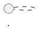
@startuml abre el diagrama.
@enduml lo cierra.
Entre ambas declaraciones se escribe su contenido.
Por ejemplo:
```{.plantuml}
@startuml
Cliente -> Servicio: Solicitud
Servicio --> Cliente: Respuesta
@enduml
```La extensión no inventa ni corrige la sintaxis PlantUML.
Cuando el servidor no puede interpretar la fuente, la construcción debe detenerse con el error correspondiente.
5.31 Primer diagrama
Este es un ejemplo completo:
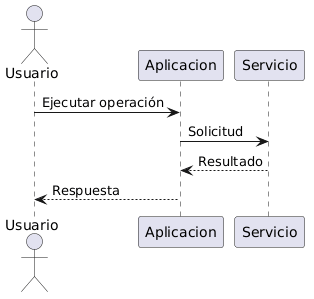
Su fuente es:
```{.plantuml}
@startuml
actor Usuario
participant Aplicacion
participant Servicio
Usuario -> Aplicacion: Ejecutar operación
Aplicacion -> Servicio: Solicitud
Servicio --> Aplicacion: Resultado
Aplicacion --> Usuario: Respuesta
@enduml
```El mismo bloque se utiliza para HTML y PDF.
No es necesario mantener una versión distinta para cada formato.
5.32 Diagramas de secuencia
Los diagramas de secuencia representan interacciones ordenadas en el tiempo.
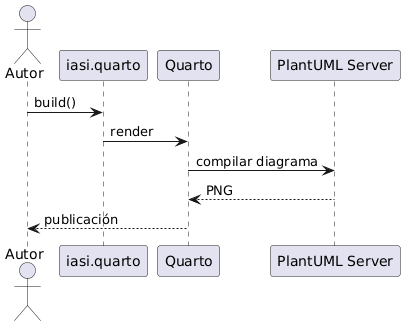
La fuente:
```{.plantuml}
@startuml
actor Autor
participant "iasi.quarto" as IASI
participant Quarto
participant "PlantUML Server" as PlantUML
Autor -> IASI: build()
IASI -> Quarto: render
Quarto -> PlantUML: compilar diagrama
PlantUML --> Quarto: PNG
Quarto --> Autor: publicación
@enduml
```Pueden utilizarse:
actores
participantes
mensajes síncronos
respuestas
activaciones
fragmentos condicionales
bucles
notasConviene mantener los nombres coherentes con el vocabulario utilizado en el texto.
5.33 Diagramas de componentes
Los diagramas de componentes muestran piezas de un sistema y sus dependencias.
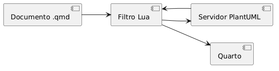
La fuente:
```{.plantuml}
@startuml
left to right direction
component "Documento .qmd" as Document
component "Filtro Lua" as Filter
component "Servidor PlantUML" as Server
component "Quarto" as Quarto
Document --> Filter
Filter --> Server
Server --> Filter
Filter --> Quarto
@enduml
```Los alias:
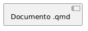
permiten utilizar una etiqueta legible en el diagrama y un identificador breve en las relaciones.
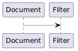
Esta práctica mejora la legibilidad cuando los nombres contienen espacios o son demasiado largos.
5.34 Diagramas de actividad
Los diagramas de actividad son útiles para describir procesos y decisiones.
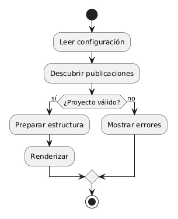
La fuente:
```{.plantuml}
@startuml
start
:Leer configuración;
:Descubrir publicaciones;
if (¿Proyecto válido?) then (sí)
:Preparar estructura;
:Renderizar;
else (no)
:Mostrar errores;
endif
stop
@enduml
```Este tipo de diagrama resulta apropiado para:
pipelines
procesos de validación
flujos de decisión
procedimientos operativos
ciclos de construcciónNo debe utilizarse para sustituir una explicación necesaria.
El diagrama resume el flujo. El texto explica su significado y sus condiciones.
5.35 Diagramas de despliegue
Los diagramas de despliegue representan dónde se ejecutan los componentes.
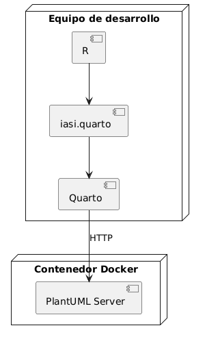
La fuente:
```{.plantuml}
@startuml
node "Equipo de desarrollo" {
component R
component Quarto
component "iasi.quarto" as IASI
}
node "Contenedor Docker" {
component "PlantUML Server" as Server
}
R --> IASI
IASI --> Quarto
Quarto --> Server : HTTP
@enduml
```Este tipo de representación permite distinguir:
componentes lógicos
procesos
máquinas
contenedores
servicios de red
dependencias externas5.36 Orientación
PlantUML elige automáticamente una disposición, pero puede indicarse una orientación general.
Horizontal:
Vertical:
Ejemplo:
```{.plantuml}
@startuml
left to right direction
rectangle Fuente
rectangle Compilador
rectangle Imagen
Fuente --> Compilador
Compilador --> Imagen
@enduml
```La orientación debe elegirse según la estructura del diagrama y el espacio disponible en la publicación.
Para PDF, los diagramas demasiado anchos pueden perder legibilidad al ajustarse al ancho de página.
5.37 Alias y nombres visibles
Los elementos pueden tener un nombre visible y un alias interno.
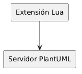
Esto evita repetir etiquetas largas:
nombre visible
Servidor PlantUML
alias utilizado en la fuente
PlantUMLLos alias también ayudan a mantener estable la fuente cuando cambia una etiqueta editorial.
5.38 Etiquetas en las relaciones
Las relaciones pueden describirse:
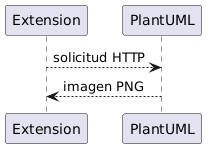
Las etiquetas deben aportar información que no resulte obvia por los nombres de los elementos.
Una relación sin contenido adicional puede mantenerse sin texto:
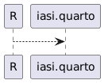
Una relación con significado operacional debería nombrarlo:
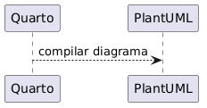
5.39 Notas
PlantUML permite añadir notas:
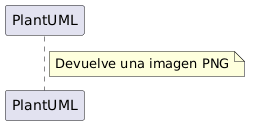
Ejemplo completo:
```{.plantuml}
@startuml
rectangle Quarto
rectangle PlantUML
Quarto --> PlantUML : fuente
note right of PlantUML
La instancia puede ser
local o compartida
end note
@enduml
```Las notas son útiles para aclaraciones breves.
Cuando una explicación necesita varios párrafos, debe permanecer en el texto del documento y no dentro del diagrama.
5.40 Separar significado y apariencia
Los bloques deben concentrarse en:
elementos
relaciones
orden
agrupaciones
mensajes
decisionesLa apariencia común debe vivir en los archivos de estilo configurados para la publicación.
No conviene repetir en cada bloque:
colores corporativos
tipografías
grosores de borde
configuración visual generalLa fuente del diagrama describe qué representa.
El estilo compartido decide cómo se presenta.
5.41 Un diagrama por bloque
Cada bloque .plantuml debe representar un único diagrama.
un bloque
-> una fuente
-> una imagen
-> una entrada de cachéNo debe utilizarse un único bloque para producir varios diagramas independientes.
Separarlos permite:
colocarlos junto al texto correspondiente
reutilizar la caché de forma precisa
detectar qué fuente produjo cada imagen
mantener cambios pequeños y revisables5.42 Ubicación dentro del documento
El diagrama debe situarse cerca del texto que explica.
Una secuencia natural es:
introducción del concepto
diagrama
explicación de sus elementos
consecuencias o detallesEvite acumular todos los diagramas al final de un documento.
El objetivo no es crear una galería, sino integrar cada representación en el argumento técnico.
5.43 Tamaño y complejidad
Un diagrama legible no intenta contener todo el sistema.
Cuando el número de elementos crece demasiado, conviene dividirlo por perspectiva:
visión general
componentes principales
flujo de una operación
despliegue
detalle de un subsistemaUna publicación puede contener varios diagramas relacionados, cada uno con una pregunta clara.
¿qué componentes existen?
¿cómo se comunican?
¿dónde se ejecutan?
¿qué ocurre durante una operación?Cada pregunta puede requerir una representación diferente.
5.44 Nombres estables
Los nombres utilizados en los diagramas deben coincidir con los nombres empleados en:
el texto
la configuración
el código
otros diagramasNo conviene llamar al mismo elemento:
PlantUML Server
servidor de diagramas
motor gráfico
servicio UMLsin una razón explícita.
La coherencia terminológica convierte los diagramas en parte de la documentación, no en ilustraciones aisladas.
5.45 Caracteres y codificación
Los documentos y los archivos de estilo deben guardarse en UTF-8.
Esto permite utilizar correctamente:
acentos
eñes
símbolos
etiquetas en castellanoPor ejemplo:
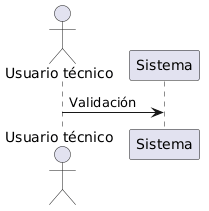
Cuando aparecen caracteres incorrectos, deben revisarse:
la codificación del archivo .qmd
la codificación del archivo .puml
la respuesta del servidor
la fuente utilizada por PlantUML5.46 Opciones por bloque
Un bloque puede incluir atributos reconocidos por la extensión.
Por ejemplo, para evitar temporalmente la caché:
```{.plantuml cache="false"}
@startuml
Alice -> Bob: Compilación nueva
@enduml
```Las opciones globales continúan viniendo de _quarto.yml.
Las opciones por bloque deben utilizarse únicamente cuando un diagrama necesita una excepción concreta.
El capítulo dedicado a la caché explica con más detalle su comportamiento.
5.47 Prueba mínima
Después de configurar la extensión, cree un documento con:
## Prueba de PlantUML
```{.plantuml}
@startuml
Alice -> Bob: Funciona
Bob --> Alice: PNG generado
@enduml
```Construya HTML:
build(
format = "html"
)Después construya PDF:
build(
format = "pdf"
)El mismo diagrama debe aparecer en ambos resultados.
5.48 Criterio práctico
Un bloque PlantUML correcto debe cumplir cuatro condiciones:
la fuente es válida
el diagrama responde a una pregunta concreta
los nombres coinciden con el resto de la documentación
la complejidad permite leerlo en HTML y PDFUn buen diagrama no contiene más información. Contiene la información adecuada, colocada donde el texto la necesita.
5.49 Estilos compartidos
La extensión puede incorporar uno o varios archivos PlantUML a todos los diagramas de una publicación.
La configuración recomendada utiliza:
filter-options:
plantuml:
styles:
- resources/plantuml/iasi.pumlEl archivo:
resources/plantuml/iasi.pumlcentraliza la apariencia común de los diagramas.
documentos .qmd
-> estructura y significado
iasi.puml
-> apariencia compartidaEsta separación evita repetir reglas visuales dentro de cada bloque.
5.50 Estructura recomendada
Una publicación puede organizar los recursos PlantUML así:
publication/
├── _quarto.yml
├── resources/
│ └── plantuml/
│ └── iasi.puml
└── chapters/
├── 01-intro/
└── 02-fundamentals/La ruta declarada en _quarto.yml debe coincidir con la ubicación real:
styles:
- resources/plantuml/iasi.pumlEl archivo debe estar disponible durante la construcción y guardado en UTF-8.
5.51 Qué pertenece al estilo
Un archivo compartido puede definir:
colores
tipografía
bordes
fondos
sombras
espaciado
apariencia de flechas
estilo de actores
estilo de componentes
estilo de nodos
convenciones visualesPor ejemplo:
Este contenido es únicamente un ejemplo de estructura.
Los colores, fuentes y convenciones definitivos pertenecen a la identidad visual de cada publicación.
5.52 Qué debe permanecer en el diagrama
El bloque .plantuml debe describir el contenido concreto:
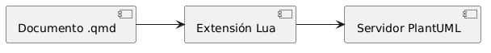
No debería repetir reglas generales como:
Cuando esas reglas aparecen en cada documento:
aumenta la duplicación
los diagramas pueden divergir
los cambios visuales exigen editar muchos archivos
la fuente pierde legibilidadEl diagrama debe concentrarse en elementos y relaciones.
5.53 Cómo se aplica el estilo
Antes de compilar un diagrama, la extensión lee los archivos configurados.
Después inserta su contenido inmediatamente después de la línea @startuml.
Una fuente original:
se prepara conceptualmente como:
El servidor recibe la fuente ya preparada.
Por tanto, el estilo forma parte de la compilación y también influye en la identidad utilizada por la caché.
cambia el estilo
-> cambia la fuente preparada
-> cambia la imagen generada5.54 Varios archivos de estilo
La opción styles admite más de un archivo:
styles:
- resources/plantuml/base.puml
- resources/plantuml/iasi.puml
- resources/plantuml/architecture.pumlLa extensión los lee en el orden declarado.
base.puml
-> iasi.puml
-> architecture.puml
-> contenido del diagramaEste orden permite construir estilos por capas.
Por ejemplo:
base.puml
reglas generales
iasi.puml
identidad visual de la publicación
architecture.puml
convenciones específicas para diagramas técnicosCuando dos archivos modifican la misma propiedad, la regla aplicada posteriormente puede reemplazar a la anterior según el comportamiento de PlantUML.
El orden debe ser deliberado y estable.
5.55 Un único archivo o varios
Para una publicación pequeña, un solo archivo suele ser suficiente:
resources/plantuml/iasi.pumlCuando las reglas crecen, pueden separarse por responsabilidad:
resources/plantuml/
├── base.puml
├── sequence.puml
├── components.puml
└── deployment.pumlLa separación resulta útil cuando:
las reglas tienen ámbitos claros
varios libros comparten una base
existen convenciones por tipo de diagrama
los archivos siguen siendo fáciles de localizarNo conviene fragmentar el estilo sin una necesidad real.
Demasiados archivos convierten una decisión visual sencilla en una pequeña arqueología de includes.
5.56 Estilo base recomendado
Un punto de partida sencillo podría ser:
El objetivo no es decorar cada elemento.
El objetivo es conseguir que todos los diagramas pertenezcan visualmente a la misma publicación.
5.57 Estilos por tipo de elemento
PlantUML permite configurar familias concretas.
5.57.1 Rectángulos
5.57.2 Componentes
5.57.3 Secuencias
5.57.4 Actividades
No todas las publicaciones necesitan configurar todos los tipos.
Deben añadirse reglas cuando existe un diagrama real que las utiliza.
5.58 Colores semánticos
Un estilo puede definir convenciones visuales con significado.
Por ejemplo:
componente interno
tono neutro
sistema externo
tono distinto
error
tono de alerta
artefacto generado
borde discontinuoSin embargo, estas convenciones deben aplicarse de forma consistente.
Un mismo color no debería significar:
servicio externo en un diagrama
error en otro
base de datos en un terceroLa identidad gráfica sirve para reducir esfuerzo cognitivo, no para fabricar un acertijo cromático.
5.59 Macros y convenciones reutilizables
El archivo .puml también puede definir macros para elementos frecuentes.
Por ejemplo:
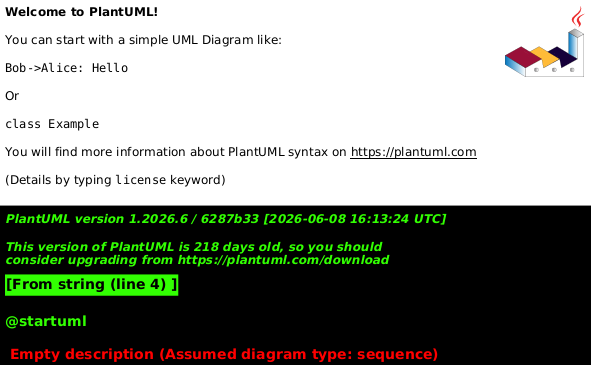
Y después:
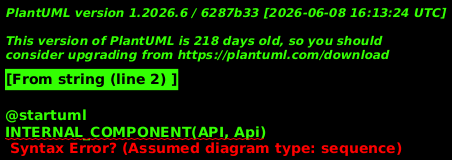
Las macros pueden reducir repetición cuando representan una convención real del proyecto.
Deben utilizarse con moderación.
Una macro demasiado abstracta puede ocultar la sintaxis y dificultar que otro autor comprenda el diagrama.
5.60 Estereotipos
Los estereotipos permiten aplicar estilos diferenciados.
Por ejemplo, en el archivo compartido:
Y en el documento:
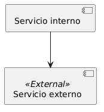
Esta técnica mantiene el significado dentro de la fuente:
<<External>>y la apariencia dentro del estilo compartido.
5.61 Fuentes
La fuente configurada debe existir en el entorno donde PlantUML genera la imagen.
Un nombre como:
puede funcionar en un equipo y no estar disponible dentro de otro servidor o contenedor.
Para una construcción reproducible deben utilizarse fuentes disponibles en la infraestructura elegida.
Cuando la fuente no existe, PlantUML puede sustituirla por otra.
Eso puede alterar:
anchos
saltos de línea
tamaño de cajas
distribución del diagramaLa tipografía también forma parte del entorno de renderizado.
5.62 Transparencia y fondo
Para integrar los diagramas en HTML y PDF puede utilizarse un fondo transparente:
Esto permite que la imagen adopte el fondo visual del documento.
Sin embargo, todos los textos, líneas y rellenos deben mantener contraste suficiente tanto en pantalla como en impresión.
Un diagrama diseñado únicamente para un fondo oscuro puede resultar ilegible en PDF.
La configuración común debe probarse en ambos formatos.
5.63 Cambiar el estilo
Cuando se modifica iasi.puml, los diagramas deben recompilarse con la nueva fuente preparada.
La extensión calcula la caché después de incorporar el estilo.
Por tanto, un cambio real en el contenido del archivo debe producir una identidad diferente.
El flujo es:
modificar iasi.puml
-> preparar de nuevo la fuente
-> generar otra identidad
-> solicitar un PNG nuevoSi durante el desarrollo se sospecha que se está reutilizando una imagen antigua, puede limpiarse únicamente la caché PlantUML:
Remove-Item -Recurse -Force .quarto\plantuml -ErrorAction SilentlyContinueNo es necesario eliminar imágenes SVG o PNG de forma indiscriminada por todo el proyecto.
5.64 Estilo y caché
El estilo no es una decoración aplicada después de compilar.
Forma parte de la fuente enviada al servidor.
Eso significa que dos diagramas con el mismo cuerpo, pero con estilos diferentes, no representan la misma compilación.
mismo diagrama
estilo A
-> imagen A
mismo diagrama
estilo B
-> imagen BLa caché debe distinguir ambos resultados.
El capítulo siguiente desarrolla su funcionamiento completo.
5.65 Probar el estilo
Una prueba mínima puede incluir varios tipos de elementos:
```{.plantuml}
@startuml
left to right direction
actor Usuario
component "iasi.quarto" as IASI
rectangle Quarto
database Cache
Usuario --> IASI
IASI --> Quarto
IASI --> Cache
@enduml
```Después deben construirse ambos formatos:
build(
format = "html"
)
build(
format = "pdf"
)La revisión debe comprobar:
legibilidad de textos
contraste
consistencia de colores
tamaño de los elementos
anchura en PDF
apariencia con fondo HTML5.66 Criterio de diseño
Un buen estilo compartido cumple tres funciones:
unifica
los diagramas parecen pertenecer al mismo libro
simplifica
los bloques contienen menos ruido visual
estabiliza
una decisión gráfica se cambia en un único lugarEl documento explica el sistema. El archivo de estilo evita que cada diagrama tenga que inventar de nuevo su propio idioma visual.
5.67 Caché de diagramas
La extensión PlantUML puede conservar los diagramas compilados y reutilizarlos en construcciones posteriores.
La configuración recomendada activa esta capacidad:
filter-options:
plantuml:
cache: trueLa caché evita solicitar al servidor una imagen que ya fue generada con la misma fuente y la misma configuración relevante.
diagrama sin cambios
-> reutilizar imagen
diagrama modificado
-> compilar de nuevoNo sustituye al servidor PlantUML ni a la fuente del diagrama.
Es un almacén local de artefactos derivados.
5.68 Por qué existe
Sin caché, cada construcción tendría que enviar de nuevo todos los diagramas al servidor.
10 diagramas
-> 10 peticiones en cada buildCon caché:
10 diagramas sin cambios
-> 0 compilaciones nuevas
1 diagrama modificado
-> 1 compilación nuevaEsto aporta:
construcciones más rápidas
menos tráfico hacia el servidor
menos trabajo repetido
mayor estabilidad durante el desarrolloLa mejora resulta especialmente visible en publicaciones grandes o cuando el servidor se encuentra en otra máquina.
5.69 Ubicación
La caché de PlantUML se guarda dentro del espacio de trabajo de Quarto:
.quarto/plantuml/Su contenido pertenece a la construcción local.
No forma parte del contenido editorial de la publicación.
chapters/
resources/
_quarto.yml
-> fuentes del proyecto
.quarto/plantuml/
-> artefactos derivadosLa carpeta puede eliminarse y regenerarse.
5.70 Identidad de un diagrama
La extensión calcula una identidad para cada compilación.
En la implementación actual intervienen:
fuente preparada
servidor configurado
formato de salida
versión de la extensiónLa fuente preparada incluye el contenido de los estilos compartidos.
Por tanto:
cambia el bloque
-> cambia la identidad
cambia iasi.puml
-> cambia la identidad
cambia el servidor
-> cambia la identidad
cambia el formato
-> cambia la identidad
cambia la versión de la extensión
-> cambia la identidadLa identidad se calcula mediante un resumen criptográfico del contenido relevante.
El nombre final no intenta ser legible para una persona.
Su función es representar de forma estable una compilación concreta.
5.71 Flujo de lectura
Cuando la extensión encuentra un bloque PlantUML:
1. lee la configuración
2. incorpora los estilos
3. calcula la identidad
4. consulta la caché
5. reutiliza o compila
6. entrega la imagen a PandocEl flujo puede representarse así:
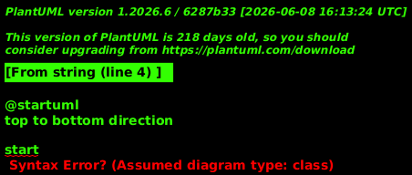
5.72 Acierto de caché
Existe un acierto de caché cuando la identidad calculada ya tiene una imagen almacenada.
cache hit
-> no se llama al servidor
-> se reutiliza la imagenEsto ocurre normalmente cuando:
el bloque no ha cambiado
los estilos no han cambiado
la configuración relevante no ha cambiado
la entrada sigue presenteEl resultado debe ser idéntico al de la compilación original.
5.73 Fallo de caché
Existe un fallo de caché cuando no se encuentra una entrada válida.
cache miss
-> se llama al servidor
-> se recibe una imagen
-> se almacenaUn fallo de caché no es un error.
Es el comportamiento normal para:
un diagrama nuevo
un diagrama modificado
un estilo modificado
una caché recién eliminada
una versión nueva de la extensión5.74 Caché activada
La configuración habitual es:
cache: trueCon ella, las construcciones repetidas reutilizan resultados.
Esta opción es apropiada para:
desarrollo local
documentación extensa
servidores compartidos
integración continua con caché persistenteLa caché debe considerarse una optimización segura, no una fuente de verdad.
5.75 Caché desactivada
Puede desactivarse globalmente:
filter-options:
plantuml:
cache: falseEn ese modo, cada diagrama se solicita de nuevo al servidor.
cada build
-> compilar todos los diagramasEsto puede ser útil para:
probar el servidor
diagnosticar una modificación del compilador
comparar resultados
confirmar que una imagen se regeneraNo es recomendable como configuración permanente cuando la publicación contiene numerosos diagramas.
5.76 Desactivar la caché en un bloque
La infraestructura admite una excepción local:
```{.plantuml cache="false"}
@startuml
Alice -> Bob: Compilación forzada
@enduml
```Esto permite probar un diagrama concreto sin cambiar la configuración de toda la publicación.
Debe utilizarse de forma temporal.
Una publicación no debería mezclar arbitrariamente diagramas con y sin caché sin una razón documentada.
5.77 Limpiar la caché
Cuando es necesario regenerar todos los diagramas, debe eliminarse únicamente la caché de PlantUML.
En PowerShell:
Remove-Item -Recurse -Force .quarto\plantuml -ErrorAction SilentlyContinueDespués, la siguiente construcción vuelve a solicitar las imágenes al servidor.
build(
format = "html"
)No es necesario eliminar:
todos los archivos PNG del proyecto
todos los archivos SVG
la carpeta .quarto completa
los directorios de salida HTML o PDFUna limpieza quirúrgica evita destruir otros artefactos útiles.
5.78 Cuándo limpiar
La limpieza manual puede ser apropiada cuando:
se ha modificado el compilador
se sospecha que una entrada está dañada
se ha cambiado la política de formato
se está probando una versión nueva del servidor
se necesita reproducir una construcción limpiaNo debería ser el primer paso ante cualquier error.
Antes conviene identificar si el problema pertenece a:
la fuente PlantUML
la configuración
el servidor
la caché
QuartoBorrar la caché puede ocultar temporalmente un problema sin explicar su causa.
5.79 Cambios de estilo
Los archivos de estilo se incorporan antes de calcular la identidad.
Por tanto, una modificación real en:
resources/plantuml/iasi.pumldebe producir nuevas imágenes.
estilo anterior
-> identidad A
-> imagen A
estilo nuevo
-> identidad B
-> imagen BEn condiciones normales no es necesario limpiar manualmente la caché al cambiar el estilo.
La limpieza solo resulta necesaria cuando se sospecha una incoherencia, una entrada dañada o un problema durante el desarrollo de la propia extensión.
5.80 Cambio de formato
La configuración recomendada utiliza:
format: pngEl formato participa en la identidad y en el nombre del recurso generado.
misma fuente + PNG
-> entrada PNG
misma fuente + SVG
-> entrada SVGLa implementación actual normaliza la salida efectiva a PNG.
Por ello, la configuración y la caché deben mantener esa misma decisión.
Cuando se cambia la política de formato de la extensión, conviene limpiar:
.quarto/plantuml/para evitar conservar artefactos pertenecientes a una etapa anterior del diseño.
5.81 Cambio de servidor
La dirección del servidor también participa en la identidad.
server: http://localhost:1025y:
server: http://plantuml.local:1025producen identidades distintas aunque la fuente sea igual.
Esta decisión evita asumir que dos servidores diferentes generan necesariamente el mismo resultado.
Pueden utilizar:
versiones distintas de PlantUML
fuentes distintas
configuraciones distintas
dependencias distintasEl servidor forma parte del entorno de compilación.
5.82 Versión de la extensión
La versión de la extensión participa en la identidad.
Cuando cambia el comportamiento del compilador, una versión nueva evita reutilizar resultados generados por una implementación anterior.
extensión 0.1.0
-> caché A
extensión 0.2.0
-> caché BEsto es importante cuando la extensión modifica:
la preparación de la fuente
la construcción de la URL
el formato
el MIME
la incorporación de estilosLa versión no es únicamente información descriptiva.
También protege la coherencia de los artefactos derivados.
5.83 Caché y disponibilidad del servidor
Un diagrama presente en caché puede reutilizarse aunque el servidor no responda.
entrada existente
-> construcción posible
entrada ausente
-> se necesita el servidorEsto mejora la tolerancia durante el desarrollo, pero tiene un límite claro.
Una construcción limpia necesita acceso al servidor para regenerar todos los diagramas.
Por tanto, la caché no debe utilizarse como sustituto de una infraestructura PlantUML disponible.
5.84 Caché en integración continua
En un pipeline de integración continua pueden adoptarse dos estrategias.
5.84.1 Construcción limpia
cada ejecución comienza sin cachéVentajas:
máxima independencia de artefactos previos
verificación completa del servidor
comportamiento fácil de reproducirCoste:
todos los diagramas se compilan de nuevo5.84.2 Caché persistente
el pipeline conserva .quarto/plantumlVentajas:
construcciones más rápidas
menos solicitudes al servidorRiesgos:
la clave externa de caché debe estar bien diseñada
la carpeta puede crecer
debe poder invalidarseLa estrategia elegida debe ser explícita.
La publicación no debe depender de una caché persistente para ser construible.
5.85 Versionado
La carpeta:
.quarto/plantuml/normalmente no debe almacenarse en Git.
La fuente verdadera está en:
documentos .qmd
archivos .puml
configuración YAML
código de la extensiónLa caché puede regenerarse a partir de esas fuentes y del servidor.
Por eso suele incluirse .quarto/ en .gitignore.
El repositorio debe conservar la receta, no cada plato que la cocina produjo ayer.
5.86 Crecimiento de la caché
Cada identidad distinta puede crear una nueva entrada.
La carpeta puede crecer cuando se realizan numerosos cambios en:
diagramas
estilos
servidores
versiones
formatosLa extensión no necesita borrar automáticamente todas las entradas antiguas durante cada construcción.
Una limpieza periódica puede hacerse cuando:
el tamaño deja de ser razonable
se termina una etapa de desarrollo
se cambia de versión principal
se prepara una construcción limpiaEl comando continúa siendo:
Remove-Item -Recurse -Force .quarto\plantuml -ErrorAction SilentlyContinue5.87 Diagnóstico
Cuando un diagrama parece antiguo, conviene seguir este orden:
1. comprobar que el archivo .qmd fue guardado
2. comprobar que el estilo .puml fue guardado
3. revisar la configuración efectiva
4. confirmar qué compiler.lua está cargando Quarto
5. limpiar .quarto/plantuml
6. construir de nuevoSi la URL del error contiene:
/svg/cuando se espera PNG, el problema no debe atribuirse automáticamente a la caché.
Puede indicar:
otra copia de la extensión
una configuración distinta
un compiler.lua no actualizado
una normalización de formato que no se está ejecutandoLa propia URL de PlantUML muestra el formato efectivo utilizado por el compilador.
5.88 Prueba de funcionamiento
Puede comprobarse la caché con un diagrama pequeño.
Primera construcción:
build(
format = "html"
)El servidor debe recibir la compilación.
Segunda construcción, sin cambios:
build(
format = "html"
)La imagen debe reutilizarse.
Después, cambie el texto:
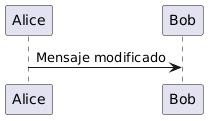
La siguiente construcción debe generar una entrada nueva.
Finalmente, restaure el contenido original.
La extensión podrá reutilizar la entrada anterior si todavía existe.
5.89 Contrato de la caché
La caché debe cumplir cuatro propiedades:
determinista
la misma entrada produce la misma identidad
invalidable
los cambios relevantes generan otra identidad
desechable
puede eliminarse sin perder fuentes
localizada
puede limpiarse sin borrar todo el proyectoLa caché acelera el pipeline, pero nunca debe convertirse en la única memoria de cómo se construyó un diagrama.
5.90 Parámetros de los bloques PlantUML
Un bloque PlantUML puede contener parámetros que modifican su compilación y atributos que controlan cómo se presenta la imagen dentro de Quarto.
No pertenecen al mismo nivel.
parámetros de compilación
modifican cómo se obtiene la imagen
atributos de presentación
modifican cómo Quarto coloca la imagenEsta distinción evita recompilar un diagrama únicamente porque cambia su tamaño, alineación o pie de figura.
5.91 Forma general
Los parámetros se declaran en la cabecera del bloque:
```{.plantuml width="80%" fig-cap="Pipeline de construcción"}
@startuml
Fuente -> Compilador
Compilador -> Imagen
@enduml
```La clase:
.plantumlidentifica el bloque que debe procesar la extensión.
Los demás valores se escriben como atributos:
nombre="valor"5.92 Parámetros de compilación
Los parámetros de compilación modifican el proceso utilizado para obtener la imagen.
La extensión reconoce:
server
format
cacheEstos parámetros pueden declararse globalmente en _quarto.yml o reemplazarse para un bloque concreto.
5.93 server
server selecciona el servidor PlantUML utilizado por el bloque.
Configuración global:
filter-options:
plantuml:
server: http://localhost:1025Excepción por bloque:
```{.plantuml server="http://plantuml.local:1025"}
@startuml
Alice -> Bob: Mensaje
@enduml
```La URL debe señalar la raíz del servidor.
No debe incluir:
/png
/svgLa extensión añade el formato al construir la petición.
El uso por bloque debe reservarse para situaciones concretas. Una publicación normal debería utilizar un servidor común.
5.94 format
format indica el formato gráfico solicitado al servidor.
La configuración recomendada es:
format: pngTambién puede declararse en el bloque:
```{.plantuml format="png"}
@startuml
Alice -> Bob: Mensaje
@enduml
```La plataforma utiliza actualmente PNG como salida efectiva común para HTML y PDF.
Por tanto, la configuración y los bloques deberían mantener:
format="png"El formato participa en la identidad de la caché porque modifica el recurso generado.
5.95 cache
cache controla si el bloque puede reutilizar una compilación anterior.
Configuración global:
cache: trueExcepción por bloque:
```{.plantuml cache="false"}
@startuml
Alice -> Bob: Compilación nueva
@enduml
```Valores:
true
reutiliza la caché cuando existe
false
solicita una compilación nuevaDesactivar la caché por bloque resulta útil durante pruebas y diagnóstico.
No debería utilizarse de forma permanente sin una razón concreta.
5.96 Atributos de presentación
Los atributos de presentación no modifican la fuente enviada a PlantUML.
Controlan la imagen que Quarto incorpora al documento.
Los principales son:
width
height
fig-cap
fig-alt
fig-align
identificadorEstos atributos no deberían participar en la identidad de compilación.
mismo diagrama + width="50%"
mismo diagrama + width="100%"
-> una única imagen compilada
-> dos presentaciones diferentes5.97 width
width establece el ancho con el que Quarto presenta la imagen.
Porcentaje:
```{.plantuml width="80%"}
@startuml
Fuente -> Imagen
@enduml
```Unidad física:
```{.plantuml width="14cm"}
@startuml
Fuente -> Imagen
@enduml
```Otros ejemplos válidos dependen del formato de salida y de las unidades admitidas por Pandoc y Quarto:
600px
12cm
5in
75%Para publicaciones HTML y PDF, los porcentajes y las unidades físicas pueden producir resultados diferentes.
Debe comprobarse el resultado en ambos formatos.
5.98 height
height establece la altura de presentación.
```{.plantuml height="8cm"}
@startuml
Fuente -> Imagen
@enduml
```También puede combinarse con width:
```{.plantuml width="14cm" height="8cm"}
@startuml
Fuente -> Imagen
@enduml
```Sin embargo, declarar ambas dimensiones puede deformar la imagen cuando la relación de aspecto no coincide con el PNG generado.
La práctica recomendada es indicar únicamente width y permitir que Quarto conserve la proporción original.
recomendado
width="80%"
utilizar con cuidado
width="14cm" height="8cm"5.99 fig-cap
fig-cap añade un pie de figura.
```{.plantuml fig-cap="Pipeline de construcción de la publicación"}
@startuml
Fuente -> Preparación
Preparación -> Quarto
@enduml
```El texto se procesa como contenido Markdown.
Puede combinarse con un identificador para crear referencias cruzadas.
5.100 Identificador
El identificador se declara con #.
```{.plantuml #fig-build-pipeline fig-cap="Pipeline de construcción"}
@startuml
Fuente -> Preparación
Preparación -> Quarto
@enduml
```Después puede referenciarse desde el texto:
Como muestra la @fig-build-pipeline, la preparación ocurre antes del renderizado.Para que Quarto lo trate como figura referenciable, el identificador debe seguir la convención:
#fig-Ejemplo:
#fig-plantuml-server
#fig-build-pipeline
#fig-publication-flow5.101 fig-alt
fig-alt proporciona una descripción alternativa para accesibilidad.
```{.plantuml
#fig-plantuml-flow
fig-cap="Flujo de compilación PlantUML"
fig-alt="Un documento Quarto pasa por la extensión Lua, el servidor PlantUML y termina convertido en una imagen PNG."
}
@startuml
Documento -> Extension
Extension -> Servidor
Servidor -> PNG
@enduml
```El texto alternativo debe explicar la información principal del diagrama.
No debe limitarse a repetir el pie de figura.
pie
nombre editorial de la figura
texto alternativo
contenido y relaciones importantes5.102 fig-align
fig-align controla la alineación de la figura.
```{.plantuml fig-align="center" width="75%"}
@startuml
Fuente -> Imagen
@enduml
```Valores habituales:
left
center
rightLa configuración más común para diagramas es:
fig-align="center"La alineación pertenece a la presentación y no modifica la compilación.
5.103 caption
La extensión puede admitir caption como alias de fig-cap.
```{.plantuml caption="Diagrama de secuencia"}
@startuml
Alice -> Bob: Mensaje
@enduml
```Para mantener coherencia con Quarto, la forma recomendada es:
fig-cap5.104 label
Puede admitirse label como alternativa al identificador del bloque.
Sin embargo, la sintaxis natural de Quarto es:
```{.plantuml #fig-example}
...
```Por claridad editorial, debe preferirse el identificador #fig-....
5.105 Combinación recomendada
Un bloque completo puede escribirse así:
```{.plantuml
#fig-publication-pipeline
width="80%"
fig-align="center"
fig-cap="Pipeline de una publicación IASI Quarto"
fig-alt="La fuente documental pasa por iasi.quarto, Quarto y el servidor PlantUML antes de producir HTML y PDF."
}
@startuml
left to right direction
rectangle "Fuente" as Source
rectangle "iasi.quarto" as IASI
rectangle "Quarto" as Quarto
rectangle "PlantUML" as PlantUML
rectangle "HTML / PDF" as Output
Source --> IASI
IASI --> Quarto
Quarto --> PlantUML
PlantUML --> Quarto
Quarto --> Output
@enduml
```En este ejemplo:
#fig-publication-pipeline
identifica la figura
width
controla el tamaño
fig-align
controla la posición
fig-cap
proporciona el pie
fig-alt
describe el contenido
la fuente PlantUML
define elementos y relaciones5.106 Qué parámetros modifican la caché
Deben participar en la identidad de compilación:
fuente preparada
server
format
versión de la extensión
estilos incorporadosNo deben participar:
width
height
fig-cap
fig-alt
fig-align
identificadorLa razón es sencilla:
compilación
decide qué imagen se genera
presentación
decide cómo se utiliza esa imagenCambiar el pie de figura no debería llamar al servidor PlantUML.
Cambiar el ancho tampoco.
Cambiar la fuente o el estilo sí debe generar una imagen nueva.
5.107 Parámetros globales y parámetros de bloque
No todas las opciones globales tienen sentido dentro de un bloque.
Configuración global:
enabled
styles
server
format
cacheConfiguración por bloque:
server
format
cache
width
height
fig-cap
fig-alt
fig-align
identificadorenabled controla la extensión completa.
styles define una política común de la publicación.
Por tanto, no deberían modificarse arbitrariamente en cada diagrama.
5.108 Tabla de referencia
| Parámetro | Ámbito | Función | Afecta a la compilación |
|---|---|---|---|
enabled |
Global | Activa o desactiva la extensión | Sí, detiene el procesamiento |
styles |
Global | Incorpora estilos compartidos | Sí |
server |
Global o bloque | Selecciona el servidor PlantUML | Sí |
format |
Global o bloque | Selecciona el formato gráfico | Sí |
cache |
Global o bloque | Activa o evita la reutilización | No cambia la imagen, pero cambia el proceso |
width |
Bloque | Controla el ancho de presentación | No |
height |
Bloque | Controla la altura de presentación | No |
fig-cap |
Bloque | Añade el pie de figura | No |
fig-alt |
Bloque | Añade descripción alternativa | No |
fig-align |
Bloque | Controla la alineación | No |
#fig-... |
Bloque | Identifica la figura | No |
5.109 Criterio de uso
La regla práctica es:
si cambia la imagen que debe producir PlantUML
es un parámetro de compilación
si cambia cómo Quarto presenta la misma imagen
es un atributo de presentaciónPlantUML genera la imagen. Quarto decide cuánto ocupa, dónde aparece y cómo se referencia.
5.110 Resolución de problemas
Los errores de PlantUML pueden aparecer en distintas etapas del pipeline.
carga de la extensión
lectura de configuración
preparación de la fuente
acceso al servidor
compilación
caché
integración con QuartoEl mensaje final no siempre identifica por sí solo la causa real.
La forma más eficaz de diagnosticar consiste en localizar primero qué componente ha fallado.
5.111 Orden de diagnóstico
Siga este orden:
1. comprobar que el filtro cargado es el correcto
2. comprobar la configuración efectiva
3. comprobar que el servidor responde
4. comprobar la fuente PlantUML
5. comprobar los archivos de estilo
6. comprobar la caché
7. revisar la integración con QuartoNo conviene comenzar borrando archivos al azar.
Cada etapa deja señales distintas.
5.112 El filtro no se carga
La publicación debe declarar:
filters:
- extensions/plantuml/plantuml.luaY debe existir:
extensions/plantuml/plantuml.luaLa extensión también depende del núcleo común:
extensions/core/Una copia incompleta puede contener plantuml.lua, pero carecer de:
engine.lua
config.lua
cache.lua
mediabag.lua
filesystem.lua
metadata.luaLa estructura debe conservarse completa.
Una referencia relativa incorrecta dentro de plantuml.lua también impide cargar módulos como:
compiler.lua
defaults.lua
engine.luaCuando el error menciona require, dofile o una ruta Lua, debe comprobarse qué archivo exacto está intentando cargar Quarto.
5.113 Se está editando otra copia
Es posible tener varias copias de la extensión:
dentro de la publicación
en otro proyecto
en recursos globales de Quarto
en una instalación anteriorEl error suele mostrar la ruta real del archivo ejecutado.
Por ejemplo:
...\resources\quarto\extensions\plantuml\compiler.luaEsa ruta es la que debe revisarse.
Modificar otro compiler.lua no cambia el comportamiento de la copia que Quarto está cargando.
La primera pregunta debe ser:
¿Qué archivo exacto aparece en el error?5.114 Error de sintaxis Lua
Un error como:
'end' expected near <eof>indica que Lua ha llegado al final del archivo sin encontrar el cierre esperado.
Las causas habituales son:
una función sin end
un if sin end
un bucle sin end
un archivo pegado dos veces
una edición truncadaCuando el mensaje indica:
to close 'function' at line 134debe revisarse esa función y el final del archivo.
Un compiler.lua válido debe terminar con:
return CompilerLa solución no consiste en añadir un end al azar.
Debe comprobarse si el archivo contiene contenido duplicado o incompleto.
5.115 El servidor no responde
Compruebe primero la URL base:
curl http://localhost:1025Después revise el contenedor:
docker ps --filter name=plantuml-serverY sus mensajes:
docker logs plantuml-serverSi el contenedor no está en ejecución:
docker start plantuml-serverCon Docker Compose:
docker compose up -dCuando el servidor está en otra máquina:
curl http://plantuml.local:1025La prueba debe ejecutarse desde el mismo entorno que construye Quarto.
5.116 localhost apunta al lugar equivocado
Dentro de:
una máquina virtual
un contenedor
un agente CI
otro equipolocalhost representa ese entorno.
No representa automáticamente la máquina anfitriona.
Si PlantUML se ejecuta fuera del entorno de construcción, configure una dirección accesible:
server: http://plantuml.local:1025También deben comprobarse:
resolución del nombre
puerto publicado
reglas de red
firewall
ruta entre ambos entornos5.117 La URL contiene /svg/
La URL solicitada al servidor revela el formato efectivo.
http://localhost:1025/svg/...significa que el compilador está solicitando SVG.
http://localhost:1025/png/...significa que está solicitando PNG.
Si la configuración declara:
format: pngpero el error muestra /svg/, las causas probables son:
se está cargando otra copia del compilador
la modificación no fue guardada
la normalización del formato no se ejecuta
otra configuración reemplaza el valor
se está utilizando código antiguoNo debe atribuirse automáticamente a Quarto.
La ruta pertenece a la petición construida por el compilador PlantUML.
5.118 Forzar temporalmente una comprobación
Puede añadirse temporalmente dentro de Compiler.compile():
error(
"DEBUG compiler: "
.. tostring(config.format)
)La construcción se detendrá mostrando el valor efectivo.
Después de comprobarlo, debe eliminarse el diagnóstico.
No conviene dejar errores deliberados dentro de la extensión.
5.119 SVG y construcción PDF
Un flujo basado en SVG puede hacer que Quarto intente convertir la imagen para incorporarla al PDF.
El error puede mencionar una herramienta como:
rsvg-convertEsto indica que el pipeline ha generado SVG y necesita una conversión adicional.
La configuración recomendada evita esa dependencia utilizando:
format: pngEl flujo esperado es:
PlantUML
-> PNG
-> PDFSi el error continúa mencionando SVG, debe revisarse la URL efectiva y el archivo compiler.lua realmente cargado.
5.120 La respuesta está vacía
La extensión puede detenerse con un mensaje equivalente a:
PlantUML devolvió una respuesta vacíaDebe comprobarse:
que el servidor está disponible
que la URL generada es válida
que el servidor admite el formato solicitado
que la fuente PlantUML es aceptable
que no existe un proxy o error de redLa URL incluida en el error permite reproducir la petición fuera de Quarto.
No debe ocultarse ese dato durante el diagnóstico.
5.121 Error de fuente PlantUML
Una fuente incorrecta puede contener:
@startuml ausente
@enduml ausente
elementos sin cerrar
sintaxis no reconocida
macros inexistentes
estereotipos mal escritosReduzca temporalmente el bloque a:
```{.plantuml}
@startuml
Alice -> Bob: Prueba
@enduml
```Si este ejemplo funciona, el problema está en la fuente original o en alguno de sus recursos.
Después, reincorpore los elementos de forma gradual.
5.122 El estilo no puede leerse
La configuración:
styles:
- resources/plantuml/iasi.pumlexige que el archivo exista y sea legible.
La extensión puede mostrar un error equivalente a:
No se pudo leer el estilo PlantUMLCompruebe:
la ruta
el nombre exacto
la extensión .puml
los permisos
la codificación
el directorio desde el que se resuelveEn Windows, una diferencia de mayúsculas puede pasar inadvertida localmente y fallar después en Linux.
Conviene mantener nombres exactos y consistentes.
5.123 El estilo produce un error
Un archivo .puml también puede contener sintaxis inválida.
Para aislarlo:
styles: []o retire temporalmente la opción styles.
Después construya un diagrama mínimo.
Si funciona sin el estilo:
el servidor responde
el filtro funciona
el problema está en el archivo .pumlRevise sus últimas modificaciones antes de volver a activarlo.
5.124 El diagrama no cambia
Primero compruebe que fueron guardados:
el archivo .qmd
el archivo .puml
_quarto.yml
compiler.luaDespués limpie únicamente la caché PlantUML:
Remove-Item -Recurse -Force .quarto\plantuml -ErrorAction SilentlyContinueY vuelva a construir:
build(
format = "html"
)Si la imagen sigue sin cambiar, compruebe qué copia de la extensión se está ejecutando.
La caché no explica una modificación realizada en un archivo que Quarto nunca carga.
5.125 El diagrama funciona en HTML pero no en PDF
Cuando HTML funciona, ya están verificados:
la carga del filtro
la configuración
el servidor
la sintaxis PlantUML
la generación de la imagenEl fallo PDF puede estar en:
el formato de imagen
la conversión de recursos
la instalación TeX
la anchura del diagrama
la integración de Quarto con PDFCompruebe primero que la URL PlantUML utiliza /png/.
Después revise:
quarto checkSi el error procede de LaTeX, debe tratarse como un problema del entorno PDF, no del servidor PlantUML.
5.126 El diagrama es demasiado ancho
Un diagrama puede verse correctamente en HTML y resultar pequeño o ilegible en PDF.
Las soluciones preferibles son:
reducir el número de elementos
dividir el diagrama
cambiar la orientación
acortar etiquetas
crear una vista general y otra de detallePuede probarse:
en lugar de:
No conviene resolver toda la complejidad reduciendo la tipografía hasta convertir el diagrama en polvo técnico.
5.127 La tipografía cambia
El servidor PlantUML utiliza las fuentes disponibles en su propio entorno.
Un contenedor puede no tener la misma tipografía que el equipo anfitrión.
Si el estilo declara:
pero Arial no existe dentro del servidor, PlantUML puede sustituirla.
Esto puede cambiar:
anchos
saltos de línea
tamaños
disposiciónLa solución reproducible consiste en utilizar fuentes disponibles dentro de la infraestructura elegida o preparar una imagen de servidor que las incluya.
5.128 Caracteres incorrectos
Los archivos deben guardarse en UTF-8:
documentos .qmd
estilos .puml
archivos Lua
configuración YAMLCuando aparecen caracteres extraños, revise:
codificación del documento
codificación del estilo
fuentes instaladas
respuesta del servidorNo debe corregirse sustituyendo acentos por texto sin tildes.
La publicación debe preservar correctamente su idioma.
5.129 Error al descargar la imagen
La extensión utiliza pandoc.mediabag.fetch para obtener la respuesta del servidor.
Un error en esta etapa puede deberse a:
URL inaccesible
servidor detenido
error HTTP
respuesta incompatible
problema de redEl mensaje debe incluir la URL solicitada y el detalle devuelto por Pandoc.
Pruebe esa misma URL desde el entorno de construcción.
5.130 MIME inesperado
El compilador espera que el servidor devuelva un tipo compatible con el formato solicitado.
Para PNG:
image/pngPara SVG:
image/svg+xmlSi el servidor devuelve una página HTML de error, una redirección o una respuesta intermedia, el contenido puede no ser una imagen válida.
Compruebe:
la URL completa
el código HTTP
el contenido recibido
la configuración del servidor o proxyUna respuesta HTTP correcta no garantiza por sí sola que el cuerpo sea el diagrama esperado.
5.131 Caché dañada
Una entrada puede quedar incompleta por una interrupción durante la escritura o por una modificación del desarrollo.
Limpie:
Remove-Item -Recurse -Force .quarto\plantuml -ErrorAction SilentlyContinueDespués construya de nuevo.
Si el problema reaparece en una caché limpia, la causa no es una entrada antigua.
Debe revisarse la compilación o la escritura del artefacto.
5.132 Configuración no aplicada
La configuración PlantUML debe estar bajo:
filter-options:
plantuml:No en una clave arbitraria.
Ejemplo correcto:
filters:
- extensions/plantuml/plantuml.lua
filter-options:
plantuml:
enabled: true
server: http://localhost:1025
format: png
cache: trueUna indentación YAML incorrecta puede hacer que las opciones no pertenezcan a plantuml.
Revise la estructura, no únicamente los valores.
5.133 Una publicación utiliza otro _quarto.yml
En un multiproyecto puede haber:
un _quarto.yml en la raíz
un _quarto.yml en cada publicación
perfiles HTML y PDFLa configuración efectiva depende de la publicación que se construye.
Compruebe:
qué libro fue seleccionado
desde qué ruta se ejecutó build()
qué perfiles se aplicaron
dónde está declarado el filtroNo debe asumirse que todos los libros comparten automáticamente la misma extensión.
5.134 Limpieza mínima
La limpieza recomendada para PlantUML es:
Remove-Item -Recurse -Force .quarto\plantuml -ErrorAction SilentlyContinueNo se recomienda comenzar con:
borrar todos los PNG
borrar todos los SVG
borrar toda la carpeta .quarto
borrar la salida completa del libro
reinstalar QuartoLa limpieza debe corresponder al componente sospechoso.
5.135 Diagnóstico completo
Una secuencia práctica es:
1. guardar todos los archivos
2. leer la ruta exacta del error
3. confirmar el compiler.lua cargado
4. comprobar _quarto.yml
5. abrir el servidor en el navegador
6. ejecutar curl contra el servidor
7. probar un diagrama mínimo
8. desactivar temporalmente los estilos
9. limpiar .quarto/plantuml
10. construir solo HTML
11. construir PDFCada paso reduce el espacio de búsqueda.
5.136 Tabla rápida
| Síntoma | Causa probable | Comprobación |
|---|---|---|
No se encuentra plantuml.lua |
Ruta incorrecta | Revisar filters y estructura |
Error require o dofile |
Copia incompleta o ruta Lua incorrecta | Revisar extensions/core |
end expected near <eof> |
Archivo Lua truncado o duplicado | Revisar la línea indicada y el final |
| No conecta con el servidor | Contenedor detenido o URL inaccesible | curl, docker ps, docker logs |
URL con /svg/ |
Formato efectivo SVG | Revisar compiler.lua cargado |
Error rsvg-convert |
Quarto intenta convertir SVG para PDF | Forzar y verificar PNG |
No se puede leer .puml |
Ruta o permisos incorrectos | Revisar styles |
| Diagrama antiguo | Caché o copia de extensión equivocada | Guardar, verificar ruta y limpiar caché |
| HTML funciona, PDF falla | Entorno PDF o formato de imagen | Revisar PNG, TeX y quarto check |
| Tipografía distinta | Fuente ausente en el servidor | Revisar fuentes del contenedor |
5.137 Información útil al informar de un error
Un informe útil debe incluir:
mensaje completo
ruta exacta del archivo Lua
URL PlantUML mostrada
formato solicitado
configuración filter-options
resultado de curl
resultado de docker ps
si falla HTML, PDF o ambos
si ocurre con un diagrama mínimoTambién conviene indicar:
sistema operativo
entorno de ejecución
versión de Quarto
versión de iasi.quarto
versión de la extensiónNo es necesario adjuntar toda la publicación para comenzar el diagnóstico.
Una evidencia pequeña y precisa suele abrir la cerradura más rápido que una carretilla de logs.
El objetivo no es probar cosas hasta que funcione. Es identificar qué etapa dejó de cumplir su contrato.